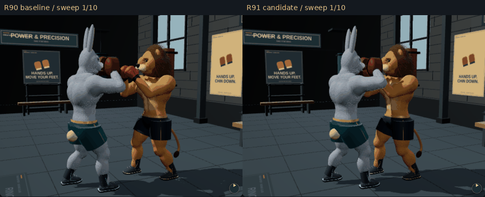
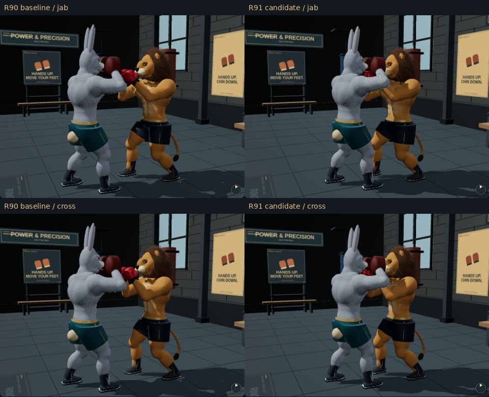
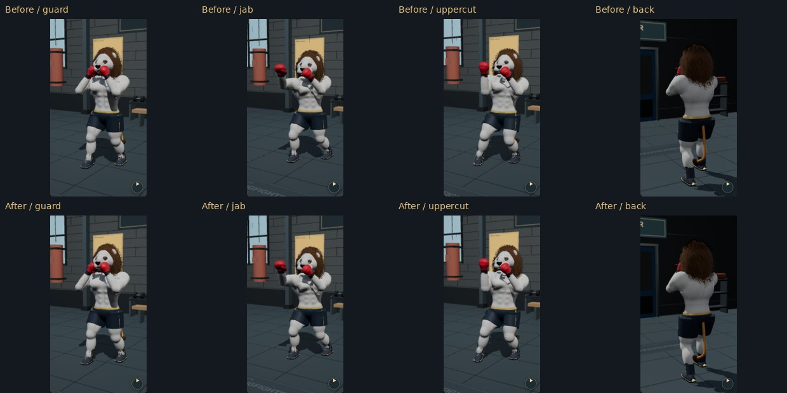

Two rope revolutions, sixteen sampled frames. Timing approximates 1.72 turns/sec; this is not a measured FPS recording.

Round mitt sweep and shallower duck, ten frames at 120 ms. Forearm rotation turns the palm down while preserving wrist alignment. Both sweep directions are checked by regression tests.

Jab and cross meet opposite-facing partners' corresponding mitts. Equipment remains attached to actual hands.

Clay body, coat hidden, existing arena lighting. Stronger bounded muscle correctives; not a replacement sculpt or proof that the unfinished authored head/mane milestone is complete.
Physical iPhone/Android sustained FPS and thermal performance remain unverified.